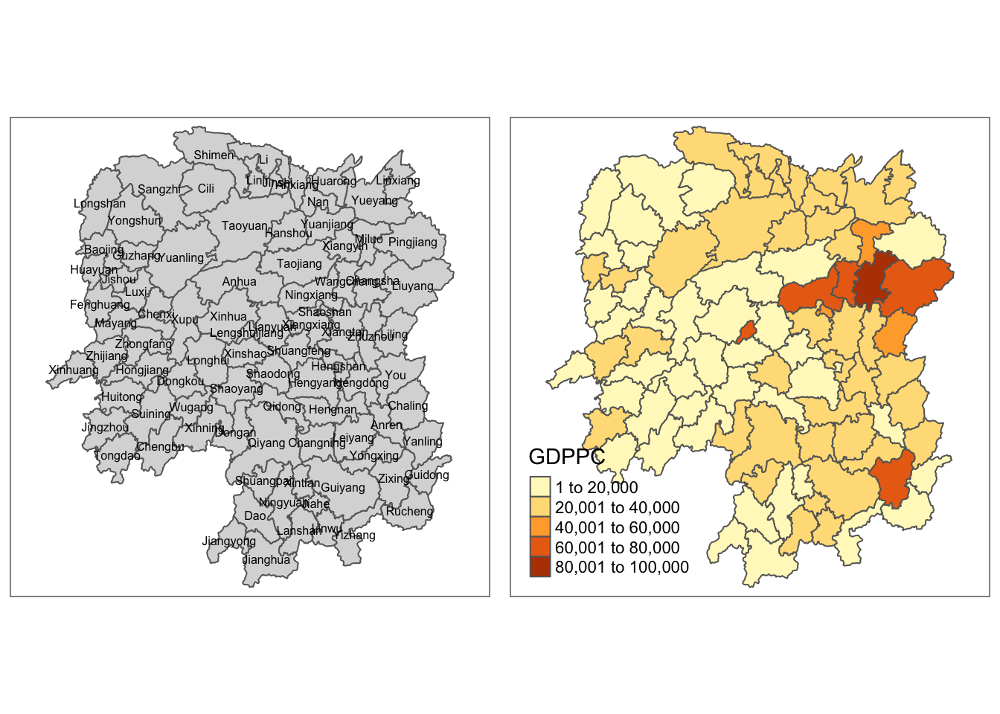
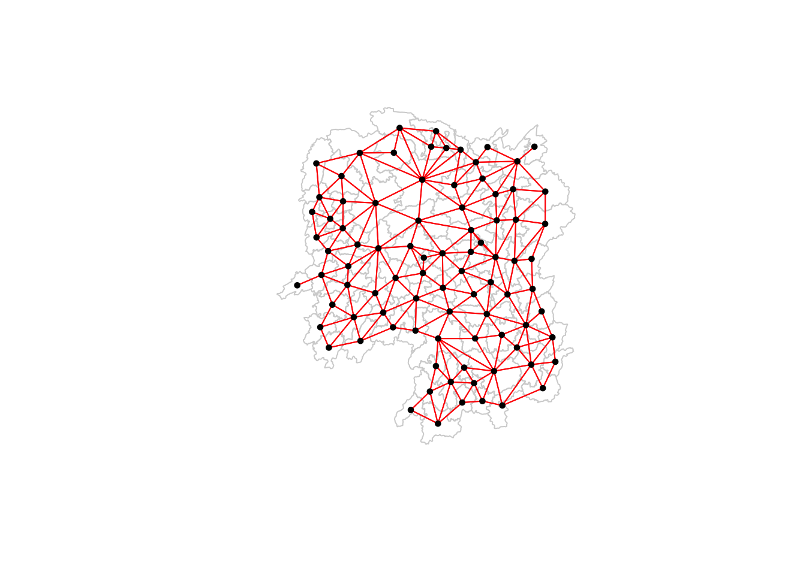
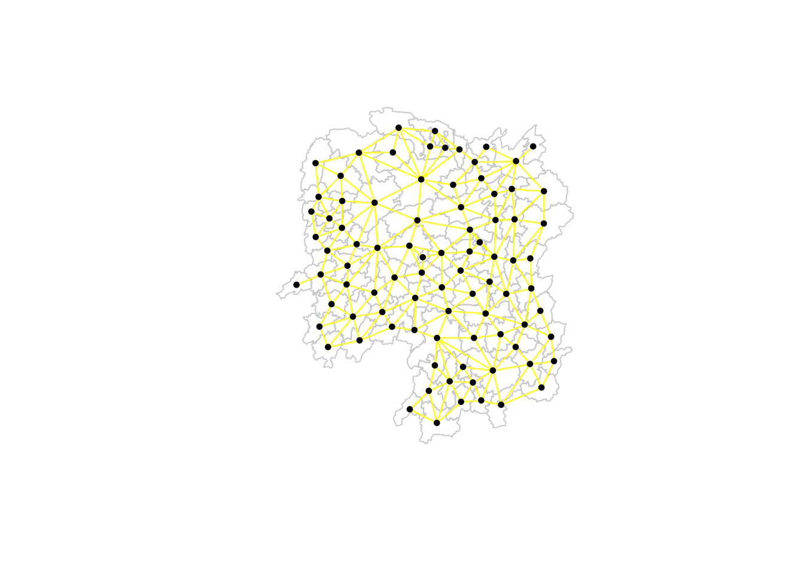
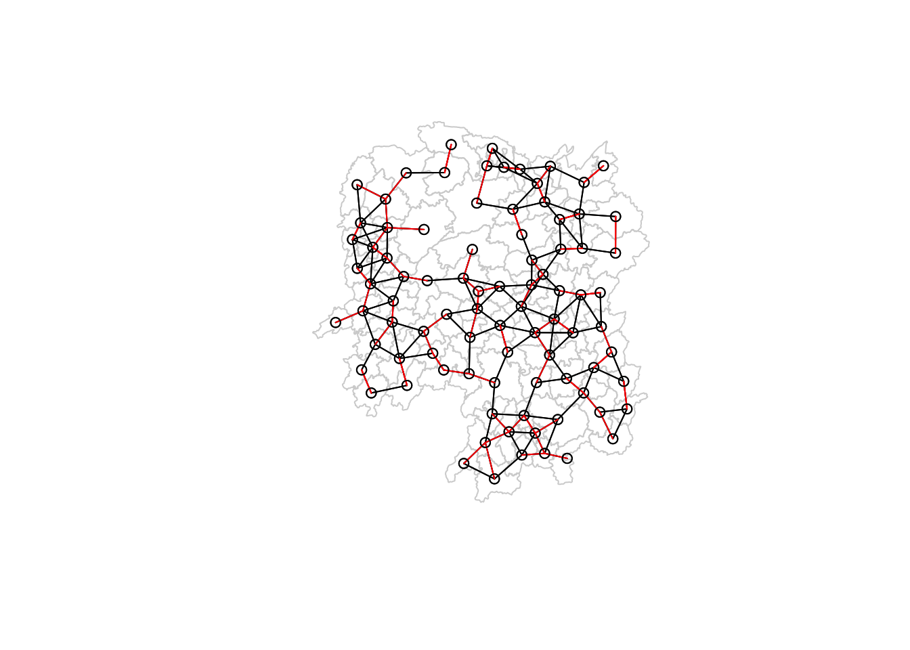
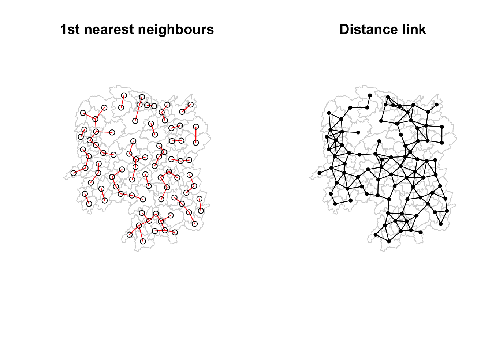
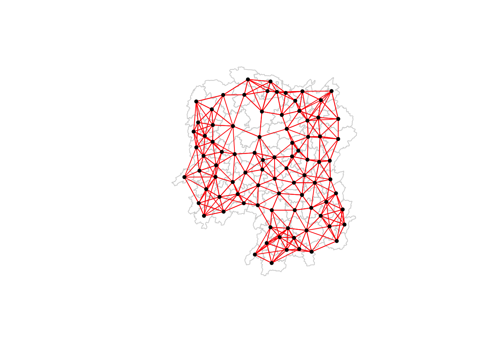
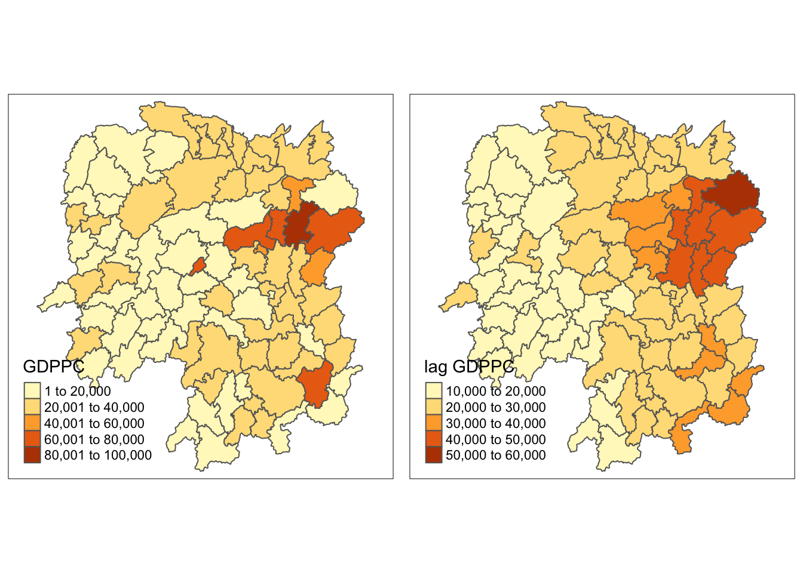
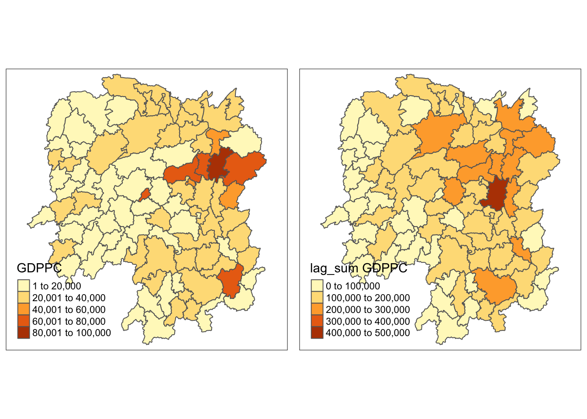
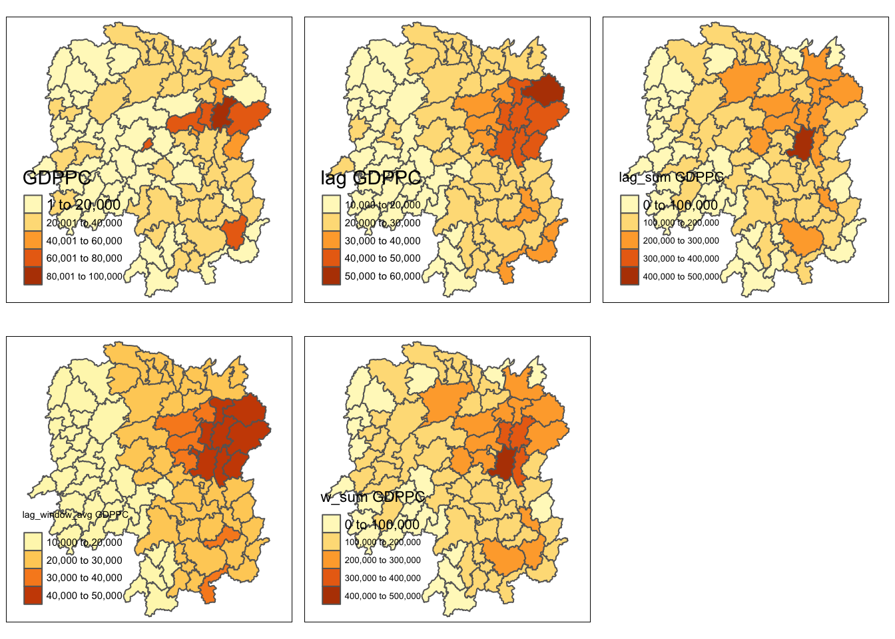

pacman::p_load(sf, spdep, tmap, tidyverse, knitr)Hands-on_Ex2
2nd date with Geospatial
Getting Started
Lets make make sure that spdep, sf, tmap and tidyverse packages of R are currently installed
Importing Geosptial Data into R
Importing shapefile into R env
The code chunk below uses st_read() of sf package to import Hunan shapefile into R. The imported shapefile will be simple features Object of sf.
hunan <- st_read(dsn = "data/geospatial", layer = "Hunan")Reading layer `Hunan' from data source
`/Users/youting/ytquek/ISSS624/Hands-on_Ex2/data/geospatial'
using driver `ESRI Shapefile'
Simple feature collection with 88 features and 7 fields
Geometry type: POLYGON
Dimension: XY
Bounding box: xmin: 108.7831 ymin: 24.6342 xmax: 114.2544 ymax: 30.12812
Geodetic CRS: WGS 84Importing CSV file into into R env
hunan2012 <- read.csv("data/aspatial/Hunan_2012.csv")Performing relational join
Using left_join() of dplyr package to update the attribute table of hunan’s SpatialPolygonsDataFrame with the attribute fields of hunan2012 dataframe.
hunan <- left_join(hunan,hunan2012)%>%
select(1:4, 7, 15)Visualising Regional Development Indicator
Preparing a basemap and a choropleth map showing the distribution of GDPPC 2012 by using qtm() of tmap package.
basemap <- tm_shape(hunan) + tm_polygons() + tm_text("NAME_3",size = 0.5)
gdppc <- qtm(hunan,"GDPPC")
tmap_arrange(basemap,gdppc,asp=1,ncol=2)
Computing Contiguity Spatial Weights
In spatial analysis - a neighborhood refers to those data points that we consider to be proximate to a given focal data point. With area-based vector data (polygons), there are multiple ways to measure proximity:
Contiguity-based neighbors consider neighboring polygons to be those that “touch” a focal polygon, and are derived in spdep package with the poly2nb() function
Distance-based neighbors are those within a given proximity threshold to a focal polygon; distances are measured between polygon centroid using the knn2nb() function
Contiguity happens when two spatial units share a common border.
Queen Contiguity: A neigboring polygon is one that shares a vertex with the focal polygon Rook Contiguity: A neigboring polygon is one that shares an edge (line segment) with the focal polygon
Computing (QUEEN) contiguity based neighbours
poly2nb() of spdep package to compute contiguity weight matrices for the study area.
pacman::p_load(spdep)
wm_q <- poly2nb(hunan, queen=TRUE)
summary(wm_q)Neighbour list object:
Number of regions: 88
Number of nonzero links: 448
Percentage nonzero weights: 5.785124
Average number of links: 5.090909
Link number distribution:
1 2 3 4 5 6 7 8 9 11
2 2 12 16 24 14 11 4 2 1
2 least connected regions:
30 65 with 1 link
1 most connected region:
85 with 11 linksThe summary report shows that:
There are 88 area units in Hunan The most connected area unit has 11 neighbors (links) The two least connected areas have only 1 neighbor
For each polygon in our polygon object, wm_q lists all neighboring polygons. For example, to see the neighbors for the first polygon in the object, type:
wm_q[[1]][1] 2 3 4 57 85Polygon 1 has 5 neighbors. The numbers represent the polygon IDs as stored in hunan SpatialPolygonsDataFrame class.
We can retrive the county name of Polygon ID=1 by using the code chunk below:
hunan$NAME_3[1][1] "Anxiang"To reveal the county names of the five neighboring polygons:
hunan$NAME_3[c(2,3,4,57,85)][1] "Hanshou" "Jinshi" "Li" "Nan" "Taoyuan"To retrieve the GDPPC of these five countries:
nb1 <- wm_q[[1]]
nb1 <- hunan$GDPPC[nb1]
nb1[1] 20981 34592 24473 21311 22879The printed output above shows that the GDPPC of the five nearest neighbours based on Queen’s method are 20981, 34592, 24473, 21311 and 22879 respectively.
str(wm_q)List of 88
$ : int [1:5] 2 3 4 57 85
$ : int [1:5] 1 57 58 78 85
$ : int [1:4] 1 4 5 85
$ : int [1:4] 1 3 5 6
$ : int [1:4] 3 4 6 85
$ : int [1:5] 4 5 69 75 85
$ : int [1:4] 67 71 74 84
$ : int [1:7] 9 46 47 56 78 80 86
$ : int [1:6] 8 66 68 78 84 86
$ : int [1:8] 16 17 19 20 22 70 72 73
$ : int [1:3] 14 17 72
$ : int [1:5] 13 60 61 63 83
$ : int [1:4] 12 15 60 83
$ : int [1:3] 11 15 17
$ : int [1:4] 13 14 17 83
$ : int [1:5] 10 17 22 72 83
$ : int [1:7] 10 11 14 15 16 72 83
$ : int [1:5] 20 22 23 77 83
$ : int [1:6] 10 20 21 73 74 86
$ : int [1:7] 10 18 19 21 22 23 82
$ : int [1:5] 19 20 35 82 86
$ : int [1:5] 10 16 18 20 83
$ : int [1:7] 18 20 38 41 77 79 82
$ : int [1:5] 25 28 31 32 54
$ : int [1:5] 24 28 31 33 81
$ : int [1:4] 27 33 42 81
$ : int [1:3] 26 29 42
$ : int [1:5] 24 25 33 49 54
$ : int [1:3] 27 37 42
$ : int 33
$ : int [1:8] 24 25 32 36 39 40 56 81
$ : int [1:8] 24 31 50 54 55 56 75 85
$ : int [1:5] 25 26 28 30 81
$ : int [1:3] 36 45 80
$ : int [1:6] 21 41 47 80 82 86
$ : int [1:6] 31 34 40 45 56 80
$ : int [1:4] 29 42 43 44
$ : int [1:4] 23 44 77 79
$ : int [1:5] 31 40 42 43 81
$ : int [1:6] 31 36 39 43 45 79
$ : int [1:6] 23 35 45 79 80 82
$ : int [1:7] 26 27 29 37 39 43 81
$ : int [1:6] 37 39 40 42 44 79
$ : int [1:4] 37 38 43 79
$ : int [1:6] 34 36 40 41 79 80
$ : int [1:3] 8 47 86
$ : int [1:5] 8 35 46 80 86
$ : int [1:5] 50 51 52 53 55
$ : int [1:4] 28 51 52 54
$ : int [1:5] 32 48 52 54 55
$ : int [1:3] 48 49 52
$ : int [1:5] 48 49 50 51 54
$ : int [1:3] 48 55 75
$ : int [1:6] 24 28 32 49 50 52
$ : int [1:5] 32 48 50 53 75
$ : int [1:7] 8 31 32 36 78 80 85
$ : int [1:6] 1 2 58 64 76 85
$ : int [1:5] 2 57 68 76 78
$ : int [1:4] 60 61 87 88
$ : int [1:4] 12 13 59 61
$ : int [1:7] 12 59 60 62 63 77 87
$ : int [1:3] 61 77 87
$ : int [1:4] 12 61 77 83
$ : int [1:2] 57 76
$ : int 76
$ : int [1:5] 9 67 68 76 84
$ : int [1:4] 7 66 76 84
$ : int [1:5] 9 58 66 76 78
$ : int [1:3] 6 75 85
$ : int [1:3] 10 72 73
$ : int [1:3] 7 73 74
$ : int [1:5] 10 11 16 17 70
$ : int [1:5] 10 19 70 71 74
$ : int [1:6] 7 19 71 73 84 86
$ : int [1:6] 6 32 53 55 69 85
$ : int [1:7] 57 58 64 65 66 67 68
$ : int [1:7] 18 23 38 61 62 63 83
$ : int [1:7] 2 8 9 56 58 68 85
$ : int [1:7] 23 38 40 41 43 44 45
$ : int [1:8] 8 34 35 36 41 45 47 56
$ : int [1:6] 25 26 31 33 39 42
$ : int [1:5] 20 21 23 35 41
$ : int [1:9] 12 13 15 16 17 18 22 63 77
$ : int [1:6] 7 9 66 67 74 86
$ : int [1:11] 1 2 3 5 6 32 56 57 69 75 ...
$ : int [1:9] 8 9 19 21 35 46 47 74 84
$ : int [1:4] 59 61 62 88
$ : int [1:2] 59 87
- attr(*, "class")= chr "nb"
- attr(*, "region.id")= chr [1:88] "1" "2" "3" "4" ...
- attr(*, "call")= language poly2nb(pl = hunan, queen = TRUE)
- attr(*, "type")= chr "queen"
- attr(*, "sym")= logi TRUECreating (ROOK) contiguity based neighbours
To compute Rook contiguity weight matrix:
wm_r <- poly2nb(hunan, queen=FALSE)
summary(wm_r)Neighbour list object:
Number of regions: 88
Number of nonzero links: 440
Percentage nonzero weights: 5.681818
Average number of links: 5
Link number distribution:
1 2 3 4 5 6 7 8 9 10
2 2 12 20 21 14 11 3 2 1
2 least connected regions:
30 65 with 1 link
1 most connected region:
85 with 10 linksThe summary report shows that:
There are 88 area units in Hunan The most connected area unit has 10 neighbors (links) The two least connected areas have only 1 neighbor
Visualising contiguity weight
A connectivity graph takes a point and displays a line connecting to each neighboring point. The current geospatial dataset only has polygons at the moment, so we will need to compute points in order to make our connectivity graphs. The most typical method for this will be using polygon centroids.
pacman::p_load(purrr)
longitude <- map_dbl(hunan$geometry, ~st_centroid(.x)[[1]])
latitude <- map_dbl(hunan$geometry, ~st_centroid(.x)[[2]])
coords <- cbind(longitude, latitude)
head(coords) longitude latitude
[1,] 112.1531 29.44362
[2,] 112.0372 28.86489
[3,] 111.8917 29.47107
[4,] 111.7031 29.74499
[5,] 111.6138 29.49258
[6,] 111.0341 29.79863Plotting Queen contiguity based neighbours map
plot(hunan$geometry, border="lightgrey")
plot(wm_q, coords, pch = 19, cex = 0.6, add = TRUE, col= "red")
Plotting Rook contiguity based neighbours map
plot(hunan$geometry, border="lightgrey")
plot(wm_r, coords, pch = 19, cex = 0.6, add = TRUE, col = "yellow")
Computing distance based neighbours
#coords <- coordinates(hunan)
k1 <- knn2nb(knearneigh(coords))
k1dists <- unlist(nbdists(k1, coords, longlat = TRUE))
summary(k1dists) Min. 1st Qu. Median Mean 3rd Qu. Max.
24.79 32.57 38.01 39.07 44.52 61.79 The summary report shows that the largest first nearest neighbour distance is 61.79 km, so using this as the upper threshold gives certainty that all units will have at least one neighbour.
Computing fixed distance weight matrix
wm_d62 <- dnearneigh(coords, 0, 62, longlat = TRUE)
wm_d62Neighbour list object:
Number of regions: 88
Number of nonzero links: 324
Percentage nonzero weights: 4.183884
Average number of links: 3.681818 use str() to display the content of wm_d62 weight matrix
str(wm_d62)List of 88
$ : int [1:5] 3 4 5 57 64
$ : int [1:4] 57 58 78 85
$ : int [1:4] 1 4 5 57
$ : int [1:3] 1 3 5
$ : int [1:4] 1 3 4 85
$ : int 69
$ : int [1:2] 67 84
$ : int [1:4] 9 46 47 78
$ : int [1:4] 8 46 68 84
$ : int [1:4] 16 22 70 72
$ : int [1:3] 14 17 72
$ : int [1:5] 13 60 61 63 83
$ : int [1:4] 12 15 60 83
$ : int [1:2] 11 17
$ : int 13
$ : int [1:4] 10 17 22 83
$ : int [1:3] 11 14 16
$ : int [1:3] 20 22 63
$ : int [1:5] 20 21 73 74 82
$ : int [1:5] 18 19 21 22 82
$ : int [1:6] 19 20 35 74 82 86
$ : int [1:4] 10 16 18 20
$ : int [1:3] 41 77 82
$ : int [1:4] 25 28 31 54
$ : int [1:4] 24 28 33 81
$ : int [1:4] 27 33 42 81
$ : int [1:2] 26 29
$ : int [1:6] 24 25 33 49 52 54
$ : int [1:2] 27 37
$ : int 33
$ : int [1:2] 24 36
$ : int 50
$ : int [1:5] 25 26 28 30 81
$ : int [1:3] 36 45 80
$ : int [1:6] 21 41 46 47 80 82
$ : int [1:5] 31 34 45 56 80
$ : int [1:2] 29 42
$ : int [1:3] 44 77 79
$ : int [1:4] 40 42 43 81
$ : int [1:3] 39 45 79
$ : int [1:5] 23 35 45 79 82
$ : int [1:5] 26 37 39 43 81
$ : int [1:3] 39 42 44
$ : int [1:2] 38 43
$ : int [1:6] 34 36 40 41 79 80
$ : int [1:5] 8 9 35 47 86
$ : int [1:5] 8 35 46 80 86
$ : int [1:5] 50 51 52 53 55
$ : int [1:4] 28 51 52 54
$ : int [1:6] 32 48 51 52 54 55
$ : int [1:4] 48 49 50 52
$ : int [1:6] 28 48 49 50 51 54
$ : int [1:2] 48 55
$ : int [1:5] 24 28 49 50 52
$ : int [1:4] 48 50 53 75
$ : int 36
$ : int [1:5] 1 2 3 58 64
$ : int [1:5] 2 57 64 66 68
$ : int [1:3] 60 87 88
$ : int [1:4] 12 13 59 61
$ : int [1:5] 12 60 62 63 87
$ : int [1:4] 61 63 77 87
$ : int [1:5] 12 18 61 62 83
$ : int [1:4] 1 57 58 76
$ : int 76
$ : int [1:5] 58 67 68 76 84
$ : int [1:2] 7 66
$ : int [1:4] 9 58 66 84
$ : int [1:2] 6 75
$ : int [1:3] 10 72 73
$ : int [1:2] 73 74
$ : int [1:3] 10 11 70
$ : int [1:4] 19 70 71 74
$ : int [1:5] 19 21 71 73 86
$ : int [1:2] 55 69
$ : int [1:3] 64 65 66
$ : int [1:3] 23 38 62
$ : int [1:2] 2 8
$ : int [1:4] 38 40 41 45
$ : int [1:5] 34 35 36 45 47
$ : int [1:5] 25 26 33 39 42
$ : int [1:6] 19 20 21 23 35 41
$ : int [1:4] 12 13 16 63
$ : int [1:4] 7 9 66 68
$ : int [1:2] 2 5
$ : int [1:4] 21 46 47 74
$ : int [1:4] 59 61 62 88
$ : int [1:2] 59 87
- attr(*, "class")= chr "nb"
- attr(*, "region.id")= chr [1:88] "1" "2" "3" "4" ...
- attr(*, "call")= language dnearneigh(x = coords, d1 = 0, d2 = 62, longlat = TRUE)
- attr(*, "dnn")= num [1:2] 0 62
- attr(*, "bounds")= chr [1:2] "GE" "LE"
- attr(*, "nbtype")= chr "distance"
- attr(*, "sym")= logi TRUEAnother way to display the structure of the weight matrix is to combine table() and card() of spdep.
table(hunan$County, card(wm_d62))
1 2 3 4 5 6
Anhua 1 0 0 0 0 0
Anren 0 0 0 1 0 0
Anxiang 0 0 0 0 1 0
Baojing 0 0 0 0 1 0
Chaling 0 0 1 0 0 0
Changning 0 0 1 0 0 0
Changsha 0 0 0 1 0 0
Chengbu 0 1 0 0 0 0
Chenxi 0 0 0 1 0 0
Cili 0 1 0 0 0 0
Dao 0 0 0 1 0 0
Dongan 0 0 1 0 0 0
Dongkou 0 0 0 1 0 0
Fenghuang 0 0 0 1 0 0
Guidong 0 0 1 0 0 0
Guiyang 0 0 0 1 0 0
Guzhang 0 0 0 0 0 1
Hanshou 0 0 0 1 0 0
Hengdong 0 0 0 0 1 0
Hengnan 0 0 0 0 1 0
Hengshan 0 0 0 0 0 1
Hengyang 0 0 0 0 0 1
Hongjiang 0 0 0 0 1 0
Huarong 0 0 0 1 0 0
Huayuan 0 0 0 1 0 0
Huitong 0 0 0 1 0 0
Jiahe 0 0 0 0 1 0
Jianghua 0 0 1 0 0 0
Jiangyong 0 1 0 0 0 0
Jingzhou 0 1 0 0 0 0
Jinshi 0 0 0 1 0 0
Jishou 0 0 0 0 0 1
Lanshan 0 0 0 1 0 0
Leiyang 0 0 0 1 0 0
Lengshuijiang 0 0 1 0 0 0
Li 0 0 1 0 0 0
Lianyuan 0 0 0 0 1 0
Liling 0 1 0 0 0 0
Linli 0 0 0 1 0 0
Linwu 0 0 0 1 0 0
Linxiang 1 0 0 0 0 0
Liuyang 0 1 0 0 0 0
Longhui 0 0 1 0 0 0
Longshan 0 1 0 0 0 0
Luxi 0 0 0 0 1 0
Mayang 0 0 0 0 0 1
Miluo 0 0 0 0 1 0
Nan 0 0 0 0 1 0
Ningxiang 0 0 0 1 0 0
Ningyuan 0 0 0 0 1 0
Pingjiang 0 1 0 0 0 0
Qidong 0 0 1 0 0 0
Qiyang 0 0 1 0 0 0
Rucheng 0 1 0 0 0 0
Sangzhi 0 1 0 0 0 0
Shaodong 0 0 0 0 1 0
Shaoshan 0 0 0 0 1 0
Shaoyang 0 0 0 1 0 0
Shimen 1 0 0 0 0 0
Shuangfeng 0 0 0 0 0 1
Shuangpai 0 0 0 1 0 0
Suining 0 0 0 0 1 0
Taojiang 0 1 0 0 0 0
Taoyuan 0 1 0 0 0 0
Tongdao 0 1 0 0 0 0
Wangcheng 0 0 0 1 0 0
Wugang 0 0 1 0 0 0
Xiangtan 0 0 0 1 0 0
Xiangxiang 0 0 0 0 1 0
Xiangyin 0 0 0 1 0 0
Xinhua 0 0 0 0 1 0
Xinhuang 1 0 0 0 0 0
Xinning 0 1 0 0 0 0
Xinshao 0 0 0 0 0 1
Xintian 0 0 0 0 1 0
Xupu 0 1 0 0 0 0
Yanling 0 0 1 0 0 0
Yizhang 1 0 0 0 0 0
Yongshun 0 0 0 1 0 0
Yongxing 0 0 0 1 0 0
You 0 0 0 1 0 0
Yuanjiang 0 0 0 0 1 0
Yuanling 1 0 0 0 0 0
Yueyang 0 0 1 0 0 0
Zhijiang 0 0 0 0 1 0
Zhongfang 0 0 0 1 0 0
Zhuzhou 0 0 0 0 1 0
Zixing 0 0 1 0 0 0Plotting fixed distance weight matrix
Next, we will plot the distance weight matrix by using the code chunk below.
plot(hunan$geometry, border="lightgrey")
plot(wm_d62, coords, add=TRUE)
plot(k1, coords, add=TRUE, col="red", length=0.08)
The red lines show the links of 1st nearest neighbours and the black lines show the links of neighbours within the cut-off distance of 62km.
Alternatively, we can plot both of them next to each other by using the code chunk below.
par(mfrow=c(1,2))
plot(hunan$geometry, border="lightgrey", main="1st nearest neighbours")
plot(k1, coords, add=TRUE, col="red", length=0.08)
plot(hunan$geometry, border="lightgrey", main="Distance link")
plot(wm_d62, coords, add=TRUE, pch = 19, cex = 0.6)
Computing adaptive distance weight matrix
In fixed distance weight matrices, more densely populated areas (usually the urban areas) tend to have more neighbors and the less densely settled areas (usually the rural counties) tend to have fewer neighbors. Having many neighbors smoothes the neighbor relationship across more neighbors.
It is possible to control the numbers of neighbors directly using k-nearest neighbors, either accepting asymmetric neighbors or imposing symmetry – stating k = n as a parameter where n = number of neighbors:
knn6 <- knn2nb(knearneigh(coords, k=6))
knn6Neighbour list object:
Number of regions: 88
Number of nonzero links: 528
Percentage nonzero weights: 6.818182
Average number of links: 6
Non-symmetric neighbours listPlotting distance based neighbours
plot(hunan$geometry, border="lightgrey")
plot(knn6, coords, pch = 19, cex = 0.6, add = TRUE, col = "red")
Computing Inversed Distance Weights (IDW)
Derive a spatial weight matrix based on the Inversed Distance method.
1.) Compute the distances between areas by using nbdists() of spdep.
dist <- nbdists(wm_q, coords, longlat = TRUE)
ids <- lapply(dist, function(x) 1/(x))
ids[[1]]
[1] 0.01535405 0.03916350 0.01820896 0.02807922 0.01145113
[[2]]
[1] 0.01535405 0.01764308 0.01925924 0.02323898 0.01719350
[[3]]
[1] 0.03916350 0.02822040 0.03695795 0.01395765
[[4]]
[1] 0.01820896 0.02822040 0.03414741 0.01539065
[[5]]
[1] 0.03695795 0.03414741 0.01524598 0.01618354
[[6]]
[1] 0.015390649 0.015245977 0.021748129 0.011883901 0.009810297
[[7]]
[1] 0.01708612 0.01473997 0.01150924 0.01872915
[[8]]
[1] 0.02022144 0.03453056 0.02529256 0.01036340 0.02284457 0.01500600 0.01515314
[[9]]
[1] 0.02022144 0.01574888 0.02109502 0.01508028 0.02902705 0.01502980
[[10]]
[1] 0.02281552 0.01387777 0.01538326 0.01346650 0.02100510 0.02631658 0.01874863
[8] 0.01500046
[[11]]
[1] 0.01882869 0.02243492 0.02247473
[[12]]
[1] 0.02779227 0.02419652 0.02333385 0.02986130 0.02335429
[[13]]
[1] 0.02779227 0.02650020 0.02670323 0.01714243
[[14]]
[1] 0.01882869 0.01233868 0.02098555
[[15]]
[1] 0.02650020 0.01233868 0.01096284 0.01562226
[[16]]
[1] 0.02281552 0.02466962 0.02765018 0.01476814 0.01671430
[[17]]
[1] 0.01387777 0.02243492 0.02098555 0.01096284 0.02466962 0.01593341 0.01437996
[[18]]
[1] 0.02039779 0.02032767 0.01481665 0.01473691 0.01459380
[[19]]
[1] 0.01538326 0.01926323 0.02668415 0.02140253 0.01613589 0.01412874
[[20]]
[1] 0.01346650 0.02039779 0.01926323 0.01723025 0.02153130 0.01469240 0.02327034
[[21]]
[1] 0.02668415 0.01723025 0.01766299 0.02644986 0.02163800
[[22]]
[1] 0.02100510 0.02765018 0.02032767 0.02153130 0.01489296
[[23]]
[1] 0.01481665 0.01469240 0.01401432 0.02246233 0.01880425 0.01530458 0.01849605
[[24]]
[1] 0.02354598 0.01837201 0.02607264 0.01220154 0.02514180
[[25]]
[1] 0.02354598 0.02188032 0.01577283 0.01949232 0.02947957
[[26]]
[1] 0.02155798 0.01745522 0.02212108 0.02220532
[[27]]
[1] 0.02155798 0.02490625 0.01562326
[[28]]
[1] 0.01837201 0.02188032 0.02229549 0.03076171 0.02039506
[[29]]
[1] 0.02490625 0.01686587 0.01395022
[[30]]
[1] 0.02090587
[[31]]
[1] 0.02607264 0.01577283 0.01219005 0.01724850 0.01229012 0.01609781 0.01139438
[8] 0.01150130
[[32]]
[1] 0.01220154 0.01219005 0.01712515 0.01340413 0.01280928 0.01198216 0.01053374
[8] 0.01065655
[[33]]
[1] 0.01949232 0.01745522 0.02229549 0.02090587 0.01979045
[[34]]
[1] 0.03113041 0.03589551 0.02882915
[[35]]
[1] 0.01766299 0.02185795 0.02616766 0.02111721 0.02108253 0.01509020
[[36]]
[1] 0.01724850 0.03113041 0.01571707 0.01860991 0.02073549 0.01680129
[[37]]
[1] 0.01686587 0.02234793 0.01510990 0.01550676
[[38]]
[1] 0.01401432 0.02407426 0.02276151 0.01719415
[[39]]
[1] 0.01229012 0.02172543 0.01711924 0.02629732 0.01896385
[[40]]
[1] 0.01609781 0.01571707 0.02172543 0.01506473 0.01987922 0.01894207
[[41]]
[1] 0.02246233 0.02185795 0.02205991 0.01912542 0.01601083 0.01742892
[[42]]
[1] 0.02212108 0.01562326 0.01395022 0.02234793 0.01711924 0.01836831 0.01683518
[[43]]
[1] 0.01510990 0.02629732 0.01506473 0.01836831 0.03112027 0.01530782
[[44]]
[1] 0.01550676 0.02407426 0.03112027 0.01486508
[[45]]
[1] 0.03589551 0.01860991 0.01987922 0.02205991 0.02107101 0.01982700
[[46]]
[1] 0.03453056 0.04033752 0.02689769
[[47]]
[1] 0.02529256 0.02616766 0.04033752 0.01949145 0.02181458
[[48]]
[1] 0.02313819 0.03370576 0.02289485 0.01630057 0.01818085
[[49]]
[1] 0.03076171 0.02138091 0.02394529 0.01990000
[[50]]
[1] 0.01712515 0.02313819 0.02551427 0.02051530 0.02187179
[[51]]
[1] 0.03370576 0.02138091 0.02873854
[[52]]
[1] 0.02289485 0.02394529 0.02551427 0.02873854 0.03516672
[[53]]
[1] 0.01630057 0.01979945 0.01253977
[[54]]
[1] 0.02514180 0.02039506 0.01340413 0.01990000 0.02051530 0.03516672
[[55]]
[1] 0.01280928 0.01818085 0.02187179 0.01979945 0.01882298
[[56]]
[1] 0.01036340 0.01139438 0.01198216 0.02073549 0.01214479 0.01362855 0.01341697
[[57]]
[1] 0.028079221 0.017643082 0.031423501 0.029114131 0.013520292 0.009903702
[[58]]
[1] 0.01925924 0.03142350 0.02722997 0.01434859 0.01567192
[[59]]
[1] 0.01696711 0.01265572 0.01667105 0.01785036
[[60]]
[1] 0.02419652 0.02670323 0.01696711 0.02343040
[[61]]
[1] 0.02333385 0.01265572 0.02343040 0.02514093 0.02790764 0.01219751 0.02362452
[[62]]
[1] 0.02514093 0.02002219 0.02110260
[[63]]
[1] 0.02986130 0.02790764 0.01407043 0.01805987
[[64]]
[1] 0.02911413 0.01689892
[[65]]
[1] 0.02471705
[[66]]
[1] 0.01574888 0.01726461 0.03068853 0.01954805 0.01810569
[[67]]
[1] 0.01708612 0.01726461 0.01349843 0.01361172
[[68]]
[1] 0.02109502 0.02722997 0.03068853 0.01406357 0.01546511
[[69]]
[1] 0.02174813 0.01645838 0.01419926
[[70]]
[1] 0.02631658 0.01963168 0.02278487
[[71]]
[1] 0.01473997 0.01838483 0.03197403
[[72]]
[1] 0.01874863 0.02247473 0.01476814 0.01593341 0.01963168
[[73]]
[1] 0.01500046 0.02140253 0.02278487 0.01838483 0.01652709
[[74]]
[1] 0.01150924 0.01613589 0.03197403 0.01652709 0.01342099 0.02864567
[[75]]
[1] 0.011883901 0.010533736 0.012539774 0.018822977 0.016458383 0.008217581
[[76]]
[1] 0.01352029 0.01434859 0.01689892 0.02471705 0.01954805 0.01349843 0.01406357
[[77]]
[1] 0.014736909 0.018804247 0.022761507 0.012197506 0.020022195 0.014070428
[7] 0.008440896
[[78]]
[1] 0.02323898 0.02284457 0.01508028 0.01214479 0.01567192 0.01546511 0.01140779
[[79]]
[1] 0.01530458 0.01719415 0.01894207 0.01912542 0.01530782 0.01486508 0.02107101
[[80]]
[1] 0.01500600 0.02882915 0.02111721 0.01680129 0.01601083 0.01982700 0.01949145
[8] 0.01362855
[[81]]
[1] 0.02947957 0.02220532 0.01150130 0.01979045 0.01896385 0.01683518
[[82]]
[1] 0.02327034 0.02644986 0.01849605 0.02108253 0.01742892
[[83]]
[1] 0.023354289 0.017142433 0.015622258 0.016714303 0.014379961 0.014593799
[7] 0.014892965 0.018059871 0.008440896
[[84]]
[1] 0.01872915 0.02902705 0.01810569 0.01361172 0.01342099 0.01297994
[[85]]
[1] 0.011451133 0.017193502 0.013957649 0.016183544 0.009810297 0.010656545
[7] 0.013416965 0.009903702 0.014199260 0.008217581 0.011407794
[[86]]
[1] 0.01515314 0.01502980 0.01412874 0.02163800 0.01509020 0.02689769 0.02181458
[8] 0.02864567 0.01297994
[[87]]
[1] 0.01667105 0.02362452 0.02110260 0.02058034
[[88]]
[1] 0.01785036 0.020580342.) Assign weights to each neighboring polygon
rswm_q <- nb2listw(wm_q, style="W", zero.policy = TRUE)
rswm_qCharacteristics of weights list object:
Neighbour list object:
Number of regions: 88
Number of nonzero links: 448
Percentage nonzero weights: 5.785124
Average number of links: 5.090909
Weights style: W
Weights constants summary:
n nn S0 S1 S2
W 88 7744 88 37.86334 365.9147The zero.policy=TRUE option allows for lists of non-neighbors. This should be used with caution since the user may not be aware of missing neighbors in their dataset however, a zero.policy of FALSE would return an error.
To see the weight of the first polygon’s eight neighbors type:
rswm_q$weights[10][[1]]
[1] 0.125 0.125 0.125 0.125 0.125 0.125 0.125 0.125Each neighbor is assigned a 0.125 of the total weight. This means that when R computes the average neighboring income values, each neighbor’s income will be multiplied by 0.2 before being tallied.
Using the same method, we can also derive a row standardised distance weight matrix by using the code chunk below.
rswm_ids <- nb2listw(wm_q, glist=ids, style="B", zero.policy=TRUE)
rswm_idsCharacteristics of weights list object:
Neighbour list object:
Number of regions: 88
Number of nonzero links: 448
Percentage nonzero weights: 5.785124
Average number of links: 5.090909
Weights style: B
Weights constants summary:
n nn S0 S1 S2
B 88 7744 8.786867 0.3776535 3.8137summary(unlist(rswm_ids$weights)) Min. 1st Qu. Median Mean 3rd Qu. Max.
0.008218 0.015088 0.018739 0.019614 0.022823 0.040338 Application of Spatial Weight Matrix
Spatial lag variables are used to account for spatial autocorrelation in the data, where the values of a variables in one location are influenced by the values of the variable in nearby locations. A spatially lagged variable is a weighted sum or a weighted average of the neighboring values for that variable where Lag = E(x) or average value of the neighborhood
Spatial lag with row-standardized weights
This is the average neighbor GDPPC value for each polygon. These values are often referred to as spatially lagged values. #### 1.) Creating spatial lagged values
GDPPC.lag <- lag.listw(rswm_q, hunan$GDPPC)
GDPPC.lag [1] 24847.20 22724.80 24143.25 27737.50 27270.25 21248.80 43747.00 33582.71
[9] 45651.17 32027.62 32671.00 20810.00 25711.50 30672.33 33457.75 31689.20
[17] 20269.00 23901.60 25126.17 21903.43 22718.60 25918.80 20307.00 20023.80
[25] 16576.80 18667.00 14394.67 19848.80 15516.33 20518.00 17572.00 15200.12
[33] 18413.80 14419.33 24094.50 22019.83 12923.50 14756.00 13869.80 12296.67
[41] 15775.17 14382.86 11566.33 13199.50 23412.00 39541.00 36186.60 16559.60
[49] 20772.50 19471.20 19827.33 15466.80 12925.67 18577.17 14943.00 24913.00
[57] 25093.00 24428.80 17003.00 21143.75 20435.00 17131.33 24569.75 23835.50
[65] 26360.00 47383.40 55157.75 37058.00 21546.67 23348.67 42323.67 28938.60
[73] 25880.80 47345.67 18711.33 29087.29 20748.29 35933.71 15439.71 29787.50
[81] 18145.00 21617.00 29203.89 41363.67 22259.09 44939.56 16902.00 16930.002.) Appending spatial lagged values to main dataframe
lag_list <- list(hunan$NAME_3, lag.listw(rswm_q, hunan$GDPPC))
lag_res <- as.data.frame(lag_list)
colnames(lag_res) <- c("NAME_3", "lag GDPPC")
hunan <- left_join(hunan,lag_res)
head(hunan)Simple feature collection with 6 features and 7 fields
Geometry type: POLYGON
Dimension: XY
Bounding box: xmin: 110.4922 ymin: 28.61762 xmax: 112.3013 ymax: 30.12812
Geodetic CRS: WGS 84
NAME_2 ID_3 NAME_3 ENGTYPE_3 County GDPPC lag GDPPC
1 Changde 21098 Anxiang County Anxiang 23667 24847.20
2 Changde 21100 Hanshou County Hanshou 20981 22724.80
3 Changde 21101 Jinshi County City Jinshi 34592 24143.25
4 Changde 21102 Li County Li 24473 27737.50
5 Changde 21103 Linli County Linli 25554 27270.25
6 Changde 21104 Shimen County Shimen 27137 21248.80
geometry
1 POLYGON ((112.0625 29.75523...
2 POLYGON ((112.2288 29.11684...
3 POLYGON ((111.8927 29.6013,...
4 POLYGON ((111.3731 29.94649...
5 POLYGON ((111.6324 29.76288...
6 POLYGON ((110.8825 30.11675...3.) Comparing both the GDPPC and spatial lag GDPPC
gdppc <- qtm(hunan, "GDPPC")
lag_gdppc <- qtm(hunan, "lag GDPPC")
tmap_arrange(gdppc, lag_gdppc, asp=1, ncol=2)
Spatial lag as a sum of neighboring values
An alternative to calculating spatial lag is by adding up the neighboring values from assigning binary weights.
b_weights <- lapply(wm_q, function(x) 0*x + 1)
b_weights2 <- nb2listw(wm_q,
glist = b_weights,
style = "B")
b_weights2Characteristics of weights list object:
Neighbour list object:
Number of regions: 88
Number of nonzero links: 448
Percentage nonzero weights: 5.785124
Average number of links: 5.090909
Weights style: B
Weights constants summary:
n nn S0 S1 S2
B 88 7744 448 896 10224With the proper weights assigned, we can use lag.listw to compute a lag variable from our weight and GDPPC.
lag_sum <- list(hunan$NAME_3, lag.listw(b_weights2, hunan$GDPPC))
lag.res <- as.data.frame(lag_sum)
colnames(lag.res) <- c("NAME_3", "lag_sum GDPPC")
lag_sum[[1]]
[1] "Anxiang" "Hanshou" "Jinshi" "Li"
[5] "Linli" "Shimen" "Liuyang" "Ningxiang"
[9] "Wangcheng" "Anren" "Guidong" "Jiahe"
[13] "Linwu" "Rucheng" "Yizhang" "Yongxing"
[17] "Zixing" "Changning" "Hengdong" "Hengnan"
[21] "Hengshan" "Leiyang" "Qidong" "Chenxi"
[25] "Zhongfang" "Huitong" "Jingzhou" "Mayang"
[29] "Tongdao" "Xinhuang" "Xupu" "Yuanling"
[33] "Zhijiang" "Lengshuijiang" "Shuangfeng" "Xinhua"
[37] "Chengbu" "Dongan" "Dongkou" "Longhui"
[41] "Shaodong" "Suining" "Wugang" "Xinning"
[45] "Xinshao" "Shaoshan" "Xiangxiang" "Baojing"
[49] "Fenghuang" "Guzhang" "Huayuan" "Jishou"
[53] "Longshan" "Luxi" "Yongshun" "Anhua"
[57] "Nan" "Yuanjiang" "Jianghua" "Lanshan"
[61] "Ningyuan" "Shuangpai" "Xintian" "Huarong"
[65] "Linxiang" "Miluo" "Pingjiang" "Xiangyin"
[69] "Cili" "Chaling" "Liling" "Yanling"
[73] "You" "Zhuzhou" "Sangzhi" "Yueyang"
[77] "Qiyang" "Taojiang" "Shaoyang" "Lianyuan"
[81] "Hongjiang" "Hengyang" "Guiyang" "Changsha"
[85] "Taoyuan" "Xiangtan" "Dao" "Jiangyong"
[[2]]
[1] 124236 113624 96573 110950 109081 106244 174988 235079 273907 256221
[11] 98013 104050 102846 92017 133831 158446 141883 119508 150757 153324
[21] 113593 129594 142149 100119 82884 74668 43184 99244 46549 20518
[31] 140576 121601 92069 43258 144567 132119 51694 59024 69349 73780
[41] 94651 100680 69398 52798 140472 118623 180933 82798 83090 97356
[51] 59482 77334 38777 111463 74715 174391 150558 122144 68012 84575
[61] 143045 51394 98279 47671 26360 236917 220631 185290 64640 70046
[71] 126971 144693 129404 284074 112268 203611 145238 251536 108078 238300
[81] 108870 108085 262835 248182 244850 404456 67608 33860Next, we will append the lag_sum GDPPC field into hunan sf data frame by using the code chunk below.
hunan <- left_join(hunan, lag.res)Comparing both the GDPPC and Spatial Lag Sum GDPPC
gdppc <- qtm(hunan, "GDPPC")
lag_sum_gdppc <- qtm(hunan, "lag_sum GDPPC")
tmap_arrange(gdppc, lag_sum_gdppc, asp=1, ncol=2)
Spatial Window Avg
The spatial window average uses row-standardized weights and includes the diagonal element. To do this in R, we need to go back to the neighbors structure and add the diagonal element before assigning weights. #### 1.) Using include.self() To add the diagonal element to the neighbour list, we just need to use include.self() from spdep.
wm_qs <- include.self(wm_q)Notice that now [1] has six neighbours instead of five.
2.) nb2listw() to obtain weights
Now we obtain weights with nb2listw()
wm_qs <- nb2listw(wm_qs)
wm_qsCharacteristics of weights list object:
Neighbour list object:
Number of regions: 88
Number of nonzero links: 536
Percentage nonzero weights: 6.921488
Average number of links: 6.090909
Weights style: W
Weights constants summary:
n nn S0 S1 S2
W 88 7744 88 30.90265 357.5308Again, we use nb2listw() and glist() to explicitly assign weight values.
3.) creating lag variable
Lastly, we just need to create the lag variable from our weight structure and GDPPC variable.
lag_w_avg_gpdpc <- lag.listw(wm_qs,
hunan$GDPPC)
lag_w_avg_gpdpc [1] 24650.50 22434.17 26233.00 27084.60 26927.00 22230.17 47621.20 37160.12
[9] 49224.71 29886.89 26627.50 22690.17 25366.40 25825.75 30329.00 32682.83
[17] 25948.62 23987.67 25463.14 21904.38 23127.50 25949.83 20018.75 19524.17
[25] 18955.00 17800.40 15883.00 18831.33 14832.50 17965.00 17159.89 16199.44
[33] 18764.50 26878.75 23188.86 20788.14 12365.20 15985.00 13764.83 11907.43
[41] 17128.14 14593.62 11644.29 12706.00 21712.29 43548.25 35049.00 16226.83
[49] 19294.40 18156.00 19954.75 18145.17 12132.75 18419.29 14050.83 23619.75
[57] 24552.71 24733.67 16762.60 20932.60 19467.75 18334.00 22541.00 26028.00
[65] 29128.50 46569.00 47576.60 36545.50 20838.50 22531.00 42115.50 27619.00
[73] 27611.33 44523.29 18127.43 28746.38 20734.50 33880.62 14716.38 28516.22
[81] 18086.14 21244.50 29568.80 48119.71 22310.75 43151.60 17133.40 17009.334.) Convert the lag variable listw object into a data.frame by using as.data.frame().
lag.list.wm_qs <- list(hunan$NAME_3, lag.listw(wm_qs, hunan$GDPPC))
lag_wm_qs.res <- as.data.frame(lag.list.wm_qs)
colnames(lag_wm_qs.res) <- c("NAME_3", "lag_window_avg GDPPC")
hunan <- left_join(hunan, lag_wm_qs.res)5.) Comparing lag GDPPC to window average lag GDPPC
hunan %>%
select("County",
"lag GDPPC",
"lag_window_avg GDPPC") %>%
kable()| County | lag GDPPC | lag_window_avg GDPPC | geometry |
|---|---|---|---|
| Anxiang | 24847.20 | 24650.50 | POLYGON ((112.0625 29.75523… |
| Hanshou | 22724.80 | 22434.17 | POLYGON ((112.2288 29.11684… |
| Jinshi | 24143.25 | 26233.00 | POLYGON ((111.8927 29.6013,… |
| Li | 27737.50 | 27084.60 | POLYGON ((111.3731 29.94649… |
| Linli | 27270.25 | 26927.00 | POLYGON ((111.6324 29.76288… |
| Shimen | 21248.80 | 22230.17 | POLYGON ((110.8825 30.11675… |
| Liuyang | 43747.00 | 47621.20 | POLYGON ((113.9905 28.5682,… |
| Ningxiang | 33582.71 | 37160.12 | POLYGON ((112.7181 28.38299… |
| Wangcheng | 45651.17 | 49224.71 | POLYGON ((112.7914 28.52688… |
| Anren | 32027.62 | 29886.89 | POLYGON ((113.1757 26.82734… |
| Guidong | 32671.00 | 26627.50 | POLYGON ((114.1799 26.20117… |
| Jiahe | 20810.00 | 22690.17 | POLYGON ((112.4425 25.74358… |
| Linwu | 25711.50 | 25366.40 | POLYGON ((112.5914 25.55143… |
| Rucheng | 30672.33 | 25825.75 | POLYGON ((113.6759 25.87578… |
| Yizhang | 33457.75 | 30329.00 | POLYGON ((113.2621 25.68394… |
| Yongxing | 31689.20 | 32682.83 | POLYGON ((113.3169 26.41843… |
| Zixing | 20269.00 | 25948.62 | POLYGON ((113.7311 26.16259… |
| Changning | 23901.60 | 23987.67 | POLYGON ((112.6144 26.60198… |
| Hengdong | 25126.17 | 25463.14 | POLYGON ((113.1056 27.21007… |
| Hengnan | 21903.43 | 21904.38 | POLYGON ((112.7599 26.98149… |
| Hengshan | 22718.60 | 23127.50 | POLYGON ((112.607 27.4689, … |
| Leiyang | 25918.80 | 25949.83 | POLYGON ((112.9996 26.69276… |
| Qidong | 20307.00 | 20018.75 | POLYGON ((111.7818 27.0383,… |
| Chenxi | 20023.80 | 19524.17 | POLYGON ((110.2624 28.21778… |
| Zhongfang | 16576.80 | 18955.00 | POLYGON ((109.9431 27.72858… |
| Huitong | 18667.00 | 17800.40 | POLYGON ((109.9419 27.10512… |
| Jingzhou | 14394.67 | 15883.00 | POLYGON ((109.8186 26.75842… |
| Mayang | 19848.80 | 18831.33 | POLYGON ((109.795 27.98008,… |
| Tongdao | 15516.33 | 14832.50 | POLYGON ((109.9294 26.46561… |
| Xinhuang | 20518.00 | 17965.00 | POLYGON ((109.227 27.43733,… |
| Xupu | 17572.00 | 17159.89 | POLYGON ((110.7189 28.30485… |
| Yuanling | 15200.12 | 16199.44 | POLYGON ((110.9652 28.99895… |
| Zhijiang | 18413.80 | 18764.50 | POLYGON ((109.8818 27.60661… |
| Lengshuijiang | 14419.33 | 26878.75 | POLYGON ((111.5307 27.81472… |
| Shuangfeng | 24094.50 | 23188.86 | POLYGON ((112.263 27.70421,… |
| Xinhua | 22019.83 | 20788.14 | POLYGON ((111.3345 28.19642… |
| Chengbu | 12923.50 | 12365.20 | POLYGON ((110.4455 26.69317… |
| Dongan | 14756.00 | 15985.00 | POLYGON ((111.4531 26.86812… |
| Dongkou | 13869.80 | 13764.83 | POLYGON ((110.6622 27.37305… |
| Longhui | 12296.67 | 11907.43 | POLYGON ((110.985 27.65983,… |
| Shaodong | 15775.17 | 17128.14 | POLYGON ((111.9054 27.40254… |
| Suining | 14382.86 | 14593.62 | POLYGON ((110.389 27.10006,… |
| Wugang | 11566.33 | 11644.29 | POLYGON ((110.9878 27.03345… |
| Xinning | 13199.50 | 12706.00 | POLYGON ((111.0736 26.84627… |
| Xinshao | 23412.00 | 21712.29 | POLYGON ((111.6013 27.58275… |
| Shaoshan | 39541.00 | 43548.25 | POLYGON ((112.5391 27.97742… |
| Xiangxiang | 36186.60 | 35049.00 | POLYGON ((112.4549 28.05783… |
| Baojing | 16559.60 | 16226.83 | POLYGON ((109.7015 28.82844… |
| Fenghuang | 20772.50 | 19294.40 | POLYGON ((109.5239 28.19206… |
| Guzhang | 19471.20 | 18156.00 | POLYGON ((109.8968 28.74034… |
| Huayuan | 19827.33 | 19954.75 | POLYGON ((109.5647 28.61712… |
| Jishou | 15466.80 | 18145.17 | POLYGON ((109.8375 28.4696,… |
| Longshan | 12925.67 | 12132.75 | POLYGON ((109.6337 29.62521… |
| Luxi | 18577.17 | 18419.29 | POLYGON ((110.1067 28.41835… |
| Yongshun | 14943.00 | 14050.83 | POLYGON ((110.0003 29.29499… |
| Anhua | 24913.00 | 23619.75 | POLYGON ((111.6034 28.63716… |
| Nan | 25093.00 | 24552.71 | POLYGON ((112.3232 29.46074… |
| Yuanjiang | 24428.80 | 24733.67 | POLYGON ((112.4391 29.1791,… |
| Jianghua | 17003.00 | 16762.60 | POLYGON ((111.6461 25.29661… |
| Lanshan | 21143.75 | 20932.60 | POLYGON ((112.2286 25.61123… |
| Ningyuan | 20435.00 | 19467.75 | POLYGON ((112.0715 26.09892… |
| Shuangpai | 17131.33 | 18334.00 | POLYGON ((111.8864 26.11957… |
| Xintian | 24569.75 | 22541.00 | POLYGON ((112.2578 26.0796,… |
| Huarong | 23835.50 | 26028.00 | POLYGON ((112.9242 29.69134… |
| Linxiang | 26360.00 | 29128.50 | POLYGON ((113.5502 29.67418… |
| Miluo | 47383.40 | 46569.00 | POLYGON ((112.9902 29.02139… |
| Pingjiang | 55157.75 | 47576.60 | POLYGON ((113.8436 29.06152… |
| Xiangyin | 37058.00 | 36545.50 | POLYGON ((112.9173 28.98264… |
| Cili | 21546.67 | 20838.50 | POLYGON ((110.8822 29.69017… |
| Chaling | 23348.67 | 22531.00 | POLYGON ((113.7666 27.10573… |
| Liling | 42323.67 | 42115.50 | POLYGON ((113.5673 27.94346… |
| Yanling | 28938.60 | 27619.00 | POLYGON ((113.9292 26.6154,… |
| You | 25880.80 | 27611.33 | POLYGON ((113.5879 27.41324… |
| Zhuzhou | 47345.67 | 44523.29 | POLYGON ((113.2493 28.02411… |
| Sangzhi | 18711.33 | 18127.43 | POLYGON ((110.556 29.40543,… |
| Yueyang | 29087.29 | 28746.38 | POLYGON ((113.343 29.61064,… |
| Qiyang | 20748.29 | 20734.50 | POLYGON ((111.5563 26.81318… |
| Taojiang | 35933.71 | 33880.62 | POLYGON ((112.0508 28.67265… |
| Shaoyang | 15439.71 | 14716.38 | POLYGON ((111.5013 27.30207… |
| Lianyuan | 29787.50 | 28516.22 | POLYGON ((111.6789 28.02946… |
| Hongjiang | 18145.00 | 18086.14 | POLYGON ((110.1441 27.47513… |
| Hengyang | 21617.00 | 21244.50 | POLYGON ((112.7144 26.98613… |
| Guiyang | 29203.89 | 29568.80 | POLYGON ((113.0811 26.04963… |
| Changsha | 41363.67 | 48119.71 | POLYGON ((112.9421 28.03722… |
| Taoyuan | 22259.09 | 22310.75 | POLYGON ((112.0612 29.32855… |
| Xiangtan | 44939.56 | 43151.60 | POLYGON ((113.0426 27.8942,… |
| Dao | 16902.00 | 17133.40 | POLYGON ((111.498 25.81679,… |
| Jiangyong | 16930.00 | 17009.33 | POLYGON ((111.3659 25.39472… |
w_avg_gdppc <- qtm(hunan, "lag_window_avg GDPPC")
tmap_arrange(lag_gdppc, w_avg_gdppc, asp=1, ncol=2)
Spatial window sum
The spatial window sum is the counter part of the window average, but without using row-standardized weights.
1.) Using include.self()
To add the diagonal element to the neighbour list, we just need to use include.self() from spdep.
wm_qs <- include.self(wm_q)
b_weights <- lapply(wm_qs, function(x) 0*x + 1)
b_weights[1][[1]]
[1] 1 1 1 1 1 1Notice that now [1] has six neighbours instead of five.
2.) nb2listw() to obtain weights
Now we obtain weights with nb2listw()
b_weights2 <- nb2listw(wm_qs,
glist = b_weights,
style = "B")
b_weights2Characteristics of weights list object:
Neighbour list object:
Number of regions: 88
Number of nonzero links: 536
Percentage nonzero weights: 6.921488
Average number of links: 6.090909
Weights style: B
Weights constants summary:
n nn S0 S1 S2
B 88 7744 536 1072 141603.) Compute lag variable
w_sum_gdppc <- list(hunan$NAME_3, lag.listw(b_weights2, hunan$GDPPC))
w_sum_gdppc[[1]]
[1] "Anxiang" "Hanshou" "Jinshi" "Li"
[5] "Linli" "Shimen" "Liuyang" "Ningxiang"
[9] "Wangcheng" "Anren" "Guidong" "Jiahe"
[13] "Linwu" "Rucheng" "Yizhang" "Yongxing"
[17] "Zixing" "Changning" "Hengdong" "Hengnan"
[21] "Hengshan" "Leiyang" "Qidong" "Chenxi"
[25] "Zhongfang" "Huitong" "Jingzhou" "Mayang"
[29] "Tongdao" "Xinhuang" "Xupu" "Yuanling"
[33] "Zhijiang" "Lengshuijiang" "Shuangfeng" "Xinhua"
[37] "Chengbu" "Dongan" "Dongkou" "Longhui"
[41] "Shaodong" "Suining" "Wugang" "Xinning"
[45] "Xinshao" "Shaoshan" "Xiangxiang" "Baojing"
[49] "Fenghuang" "Guzhang" "Huayuan" "Jishou"
[53] "Longshan" "Luxi" "Yongshun" "Anhua"
[57] "Nan" "Yuanjiang" "Jianghua" "Lanshan"
[61] "Ningyuan" "Shuangpai" "Xintian" "Huarong"
[65] "Linxiang" "Miluo" "Pingjiang" "Xiangyin"
[69] "Cili" "Chaling" "Liling" "Yanling"
[73] "You" "Zhuzhou" "Sangzhi" "Yueyang"
[77] "Qiyang" "Taojiang" "Shaoyang" "Lianyuan"
[81] "Hongjiang" "Hengyang" "Guiyang" "Changsha"
[85] "Taoyuan" "Xiangtan" "Dao" "Jiangyong"
[[2]]
[1] 147903 134605 131165 135423 134635 133381 238106 297281 344573 268982
[11] 106510 136141 126832 103303 151645 196097 207589 143926 178242 175235
[21] 138765 155699 160150 117145 113730 89002 63532 112988 59330 35930
[31] 154439 145795 112587 107515 162322 145517 61826 79925 82589 83352
[41] 119897 116749 81510 63530 151986 174193 210294 97361 96472 108936
[51] 79819 108871 48531 128935 84305 188958 171869 148402 83813 104663
[61] 155742 73336 112705 78084 58257 279414 237883 219273 83354 90124
[71] 168462 165714 165668 311663 126892 229971 165876 271045 117731 256646
[81] 126603 127467 295688 336838 267729 431516 85667 51028Converting lag variable to dataframe
w_sum_gdppc.res <- as.data.frame(w_sum_gdppc)
colnames(w_sum_gdppc.res) <- c("NAME_3", "w_sum GDPPC")hunan <- left_join(hunan, w_sum_gdppc.res)
hunan %>%
select("County", "lag_sum GDPPC", "w_sum GDPPC") %>%
kable()| County | lag_sum GDPPC | w_sum GDPPC | geometry |
|---|---|---|---|
| Anxiang | 124236 | 147903 | POLYGON ((112.0625 29.75523… |
| Hanshou | 113624 | 134605 | POLYGON ((112.2288 29.11684… |
| Jinshi | 96573 | 131165 | POLYGON ((111.8927 29.6013,… |
| Li | 110950 | 135423 | POLYGON ((111.3731 29.94649… |
| Linli | 109081 | 134635 | POLYGON ((111.6324 29.76288… |
| Shimen | 106244 | 133381 | POLYGON ((110.8825 30.11675… |
| Liuyang | 174988 | 238106 | POLYGON ((113.9905 28.5682,… |
| Ningxiang | 235079 | 297281 | POLYGON ((112.7181 28.38299… |
| Wangcheng | 273907 | 344573 | POLYGON ((112.7914 28.52688… |
| Anren | 256221 | 268982 | POLYGON ((113.1757 26.82734… |
| Guidong | 98013 | 106510 | POLYGON ((114.1799 26.20117… |
| Jiahe | 104050 | 136141 | POLYGON ((112.4425 25.74358… |
| Linwu | 102846 | 126832 | POLYGON ((112.5914 25.55143… |
| Rucheng | 92017 | 103303 | POLYGON ((113.6759 25.87578… |
| Yizhang | 133831 | 151645 | POLYGON ((113.2621 25.68394… |
| Yongxing | 158446 | 196097 | POLYGON ((113.3169 26.41843… |
| Zixing | 141883 | 207589 | POLYGON ((113.7311 26.16259… |
| Changning | 119508 | 143926 | POLYGON ((112.6144 26.60198… |
| Hengdong | 150757 | 178242 | POLYGON ((113.1056 27.21007… |
| Hengnan | 153324 | 175235 | POLYGON ((112.7599 26.98149… |
| Hengshan | 113593 | 138765 | POLYGON ((112.607 27.4689, … |
| Leiyang | 129594 | 155699 | POLYGON ((112.9996 26.69276… |
| Qidong | 142149 | 160150 | POLYGON ((111.7818 27.0383,… |
| Chenxi | 100119 | 117145 | POLYGON ((110.2624 28.21778… |
| Zhongfang | 82884 | 113730 | POLYGON ((109.9431 27.72858… |
| Huitong | 74668 | 89002 | POLYGON ((109.9419 27.10512… |
| Jingzhou | 43184 | 63532 | POLYGON ((109.8186 26.75842… |
| Mayang | 99244 | 112988 | POLYGON ((109.795 27.98008,… |
| Tongdao | 46549 | 59330 | POLYGON ((109.9294 26.46561… |
| Xinhuang | 20518 | 35930 | POLYGON ((109.227 27.43733,… |
| Xupu | 140576 | 154439 | POLYGON ((110.7189 28.30485… |
| Yuanling | 121601 | 145795 | POLYGON ((110.9652 28.99895… |
| Zhijiang | 92069 | 112587 | POLYGON ((109.8818 27.60661… |
| Lengshuijiang | 43258 | 107515 | POLYGON ((111.5307 27.81472… |
| Shuangfeng | 144567 | 162322 | POLYGON ((112.263 27.70421,… |
| Xinhua | 132119 | 145517 | POLYGON ((111.3345 28.19642… |
| Chengbu | 51694 | 61826 | POLYGON ((110.4455 26.69317… |
| Dongan | 59024 | 79925 | POLYGON ((111.4531 26.86812… |
| Dongkou | 69349 | 82589 | POLYGON ((110.6622 27.37305… |
| Longhui | 73780 | 83352 | POLYGON ((110.985 27.65983,… |
| Shaodong | 94651 | 119897 | POLYGON ((111.9054 27.40254… |
| Suining | 100680 | 116749 | POLYGON ((110.389 27.10006,… |
| Wugang | 69398 | 81510 | POLYGON ((110.9878 27.03345… |
| Xinning | 52798 | 63530 | POLYGON ((111.0736 26.84627… |
| Xinshao | 140472 | 151986 | POLYGON ((111.6013 27.58275… |
| Shaoshan | 118623 | 174193 | POLYGON ((112.5391 27.97742… |
| Xiangxiang | 180933 | 210294 | POLYGON ((112.4549 28.05783… |
| Baojing | 82798 | 97361 | POLYGON ((109.7015 28.82844… |
| Fenghuang | 83090 | 96472 | POLYGON ((109.5239 28.19206… |
| Guzhang | 97356 | 108936 | POLYGON ((109.8968 28.74034… |
| Huayuan | 59482 | 79819 | POLYGON ((109.5647 28.61712… |
| Jishou | 77334 | 108871 | POLYGON ((109.8375 28.4696,… |
| Longshan | 38777 | 48531 | POLYGON ((109.6337 29.62521… |
| Luxi | 111463 | 128935 | POLYGON ((110.1067 28.41835… |
| Yongshun | 74715 | 84305 | POLYGON ((110.0003 29.29499… |
| Anhua | 174391 | 188958 | POLYGON ((111.6034 28.63716… |
| Nan | 150558 | 171869 | POLYGON ((112.3232 29.46074… |
| Yuanjiang | 122144 | 148402 | POLYGON ((112.4391 29.1791,… |
| Jianghua | 68012 | 83813 | POLYGON ((111.6461 25.29661… |
| Lanshan | 84575 | 104663 | POLYGON ((112.2286 25.61123… |
| Ningyuan | 143045 | 155742 | POLYGON ((112.0715 26.09892… |
| Shuangpai | 51394 | 73336 | POLYGON ((111.8864 26.11957… |
| Xintian | 98279 | 112705 | POLYGON ((112.2578 26.0796,… |
| Huarong | 47671 | 78084 | POLYGON ((112.9242 29.69134… |
| Linxiang | 26360 | 58257 | POLYGON ((113.5502 29.67418… |
| Miluo | 236917 | 279414 | POLYGON ((112.9902 29.02139… |
| Pingjiang | 220631 | 237883 | POLYGON ((113.8436 29.06152… |
| Xiangyin | 185290 | 219273 | POLYGON ((112.9173 28.98264… |
| Cili | 64640 | 83354 | POLYGON ((110.8822 29.69017… |
| Chaling | 70046 | 90124 | POLYGON ((113.7666 27.10573… |
| Liling | 126971 | 168462 | POLYGON ((113.5673 27.94346… |
| Yanling | 144693 | 165714 | POLYGON ((113.9292 26.6154,… |
| You | 129404 | 165668 | POLYGON ((113.5879 27.41324… |
| Zhuzhou | 284074 | 311663 | POLYGON ((113.2493 28.02411… |
| Sangzhi | 112268 | 126892 | POLYGON ((110.556 29.40543,… |
| Yueyang | 203611 | 229971 | POLYGON ((113.343 29.61064,… |
| Qiyang | 145238 | 165876 | POLYGON ((111.5563 26.81318… |
| Taojiang | 251536 | 271045 | POLYGON ((112.0508 28.67265… |
| Shaoyang | 108078 | 117731 | POLYGON ((111.5013 27.30207… |
| Lianyuan | 238300 | 256646 | POLYGON ((111.6789 28.02946… |
| Hongjiang | 108870 | 126603 | POLYGON ((110.1441 27.47513… |
| Hengyang | 108085 | 127467 | POLYGON ((112.7144 26.98613… |
| Guiyang | 262835 | 295688 | POLYGON ((113.0811 26.04963… |
| Changsha | 248182 | 336838 | POLYGON ((112.9421 28.03722… |
| Taoyuan | 244850 | 267729 | POLYGON ((112.0612 29.32855… |
| Xiangtan | 404456 | 431516 | POLYGON ((113.0426 27.8942,… |
| Dao | 67608 | 85667 | POLYGON ((111.498 25.81679,… |
| Jiangyong | 33860 | 51028 | POLYGON ((111.3659 25.39472… |
Comparing all plots
w_sum_gdppc <- qtm(hunan, "w_sum GDPPC")
tmap_arrange(gdppc, lag_gdppc, lag_sum_gdppc, w_avg_gdppc, w_sum_gdppc,
nrow = 2, asp = 1)